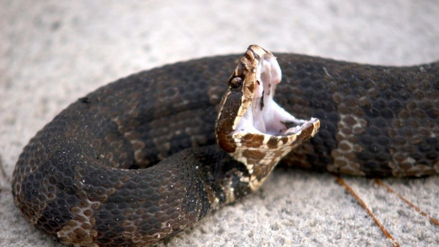

Congaree National Parksnake
(From www.foxnews.com) A small park with a boardwalk through a swamp (they prefer the polite term “floodplain”) so you can stare at some trees. The main function of the boardwalk seems to be to better present visitors to the swarms of mosquitos. Step off the boardwalk and into the realm of the four varieties of venomous snake that inhabit the park, including the “ubiquitous” cottonmouth. Run from the snakes and find yourself in glades of poison ivy or stumbling into wasps’ nests or webs of biting spiders that are “highly painful but not lethal.” As a bonus, the trails are poorly marked (when they’re not completely washed out), so as you run screaming in circles waving your hands to fend off mosquitos, you’re likely as not to impale yourself on a jagged Cyprus stump.
Gates of the Arctic

(From www.foxnews.com) More like the gates of hell: No roads reach the park, no trails traverse it. In winter there’s no warmth, just months of darkness and howling winds. But in summer at least it has plenty of man-eating mammals, clouds of biting bugs, and life-sucking swamplands. No thanks, I’ll leave it for the grizzlies. I hear there aren’t even any real gates here. That’s false advertising, man!
Badlands
(From www.foxnews.com) You know, I hate to rag on South Dakota with two entries here, but after visiting the Badlands I have to say they aren’t “Bad” as in “Cool” but rather “Bad” as in “Skip it.” The place is a dusty monument to erosion, sort of a half-assed Grand Canyon without the majesty, but with extra rattlesnakes. You could really get much of the visual effect by going down to your local stream or beach and watch the water swirl around the dirt or sand. And the “mixed-grass prairie” that surrounds this dusty divot is just another way of saying “sad shrubbery as far as the horizon.” Sure, if you’re in the area, check it out, but it pales in comparison with basically every other (non-South Dakota) western national park.